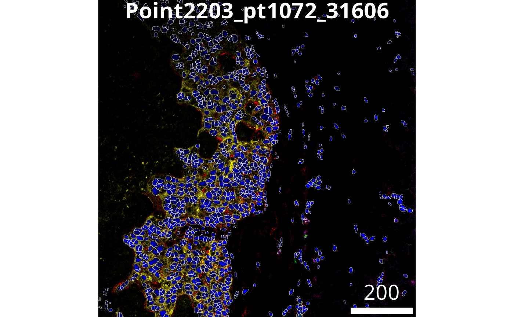

Segmenting and normalizing multiplexed imaging data with simpleSeg
Alexander Nicholls
School of Mathematics and Statistics, University of Sydney, AustraliaEllis Patrick
Westmead Institute for Medical Research, University of Sydney, AustraliaSchool of Mathematics and Statistics, University of Sydney, AustraliaNicolas Canete
Westmead Institute for Medical Research, University of Sydney, Australia10 August 2023
Source:vignettes/simpleSeg.Rmd
simpleSeg.RmdInstallation
# Install the package from Bioconductor
if (!requireNamespace("BiocManager", quietly = TRUE)) {
install.packages("BiocManager")
}
BiocManager::install("simpleSeg")Overview
The simpleSeg package extends existing bioconductor
packages such as cytomapper and EBImage by
providing a structured pipeline for creating segmentation masks from
multiplexed cellular images in the form of tiff stacks. This allows for
the single cell information of these images to be extracted in R,
without the need for external segmentation programs.
simpleSeg also facilitates the normalisation of cellular
features after these features have been extracted from the image,
priming cells for classification / clustering. These functions leverage
the functionality of the EBImage
package on Bioconductor. For more flexibility when performing your
segmentation in R we recommend learning to use the EBimage
package. A key strength of simpleSeg is that we have coded
multiple ways to perform some simple segmentation operations as well as
incorporating multiple automatic procedures to optimise key parameters
when these aren’t specified.
Load example data
In the following we will reanalyse two MIBI-TOF images from (Risom
et al., 2022) profiling the spatial landscape of ductal carcinoma in
situ (DCIS), which is a pre-invasive lesion that is thought to be a
precursor to invasive breast cancer (IBC). These images are stored in
the “extdata” folder in the package. When the path to this folder is
identified, we can read these images into R using readImage
from EBImage and store these as a
CytoImageList using the cytomapper
package.
# Get path to image directory
pathToImages <- system.file("extdata", package = "simpleSeg")
# Get directories of images
imageDirs <- dir(pathToImages, "Point", full.names = TRUE)
names(imageDirs) <- dir(pathToImages, "Point", full.names = FALSE)
# Get files in each directory
files <- files <- lapply(
imageDirs,
list.files,
pattern = "tif",
full.names = TRUE
)
# Read files with readImage from EBImage
images <- lapply(files, EBImage::readImage, as.is = TRUE)
# Convert to cytoImageList
images <- cytomapper::CytoImageList(images)
mcols(images)$imageID <- names(images)Segmentation
simpleSeg accepts an Image,
list of Image’s, or CytoImageList
as input and generates a CytoImageList of masks as output.
Here we will use the histone H3 channel in the image as a nuclei marker
for segmentation. By default, simpleseg will isolate
individual nuclei by watershedding using a combination of the intensity
of this marker and a distance map. Nuclei are dilated out by 3 pixels to
capture the cytoplasm. The user may also specify simple image
transformations using the transform argument.
masks <- simpleSeg::simpleSeg(images,
nucleus = "HH3",
transform = "sqrt")Visualise separation
The display and colorLabels functions in
EBImage make it very easy to examine the performance of the
cell segmentation. The great thing about display is that if
used in an interactive session it is very easy to zoom in and out of the
image.
# Visualise segmentation performance one way.
EBImage::display(colorLabels(masks[[1]]))Visualise outlines
The plotPixels function in cytomapper make
it easy to overlay the masks on top of the intensities of 6 markers.
Here we can see that the segmentation appears to be performing
reasonably.
# Visualise segmentation performance another way.
cytomapper::plotPixels(image = images[1],
mask = masks[1],
img_id = "imageID",
colour_by = c("PanKRT", "GLUT1", "HH3", "CD3", "CD20"),
display = "single",
colour = list(HH3 = c("black","blue"),
CD3 = c("black","purple"),
CD20 = c("black","green"),
GLUT1 = c("black", "red"),
PanKRT = c("black", "yellow")),
bcg = list(HH3 = c(0, 1, 1.5),
CD3 = c(0, 1, 1.5),
CD20 = c(0, 1, 1.5),
GLUT1 = c(0, 1, 1.5),
PanKRT = c(0, 1, 1.5)),
legend = NULL)
Methods of Watershedding
Watershedding is a method which treats images as topographical maps in order to identify individual objects and the borders between them.
The user may specify how watershedding is to be performed by using
the watershed argument in simpleSeg.
| Method | Description | |
|---|---|---|
| “distance” | Performs watershedding on a distance map of the thresholded nuclei signal. With a pixels distance being defined as the distance from the closest background signal. | |
| “intensity” | Performs watershedding using the intensity of the nuclei marker. | |
| “combine” | Combines the previous two methods by multiplying the distance map by the nuclei marker intensity. |
Methods of cell body identification
The cell body can also be identified in simpleSeg using
models of varying complexity, specified with the cellBody
argument.
| Method | Description | |
|---|---|---|
| “dilation” | Dilates the
nuclei by an amount defined by the user. The size of the dilatation in
pixels may be specified with the discDize
argument. |
|
| “discModel” | Uses all the markers to predict the presence of dilated ‘discs’ around the nuclei. The model therefore learns which markers are typically present in the cell cytoplasm and generates a mask based on this. | |
| “marker” | The user may
specify one or multiple dedicated cytoplasm markers to predict the
cytoplasm. This can be done using
cellBody = "marker name"/"index" |
|
| “None” | The nuclei mask is returned directly. |
Parallel Processing
simpleSeg also supports parallel processing, with the
cores argument being used to specify how many cores should
be used.
masks <- simpleSeg::simpleSeg(images,
nucleus = "HH3",
cores = 1)Summarise cell features
In order to characterise the phenotypes of each of the segmented
cells, measureObjects from cytomapper will
calculate the average intensity of each channel within each cell as well
as a few morphological features. The channel intensities will be stored
in the counts assay in a SingleCellExperiment.
Information on the spatial location of each cell is stored in
colData in the m.cx and m.cy
columns. In addition to this, it will propagate the information we have
store in the mcols of our CytoImageList in the
colData of the resulting
SingleCellExperiment.
cellSCE <- cytomapper::measureObjects(masks, images, img_id = "imageID")Normalising cells
Once cellular features have been extracted into a
SingleCellExperement or dataframe, these features may then be normalised
using the normalizeCellsfunction, transformed by any number
of transformations (e.g., asinh, sqrt) and
normalisation methods.
mean(Divides the marker cellular marker intensities by
their mean), minMax (Subtracts the minimum value and scales
markers between 0 and 1.), trim99 (Sets the highest 1% of
values to the value of the 99th percentile.), PC1 (Removes
the 1st principal component) can be performed with one call of the
function, in the order specified by the user.
| Method | Description | |
|---|---|---|
| “mean” | Divides the marker cellular marker intensities by their mean. | |
| “minMax” | Subtracts the minimum value and scales markers between 0 and 1. | |
| “trim99” | Sets the highest 1% of values to the value of the 99th percentile.` | |
| “PC1” | Removes the 1st principal component) can be performed with one call of the function, in the order specified by the user. |
# Transform and normalise the marker expression of each cell type.
# Use a square root transform, then trimmed the 99 quantile
cellSCE <- normalizeCells(cellSCE,
assayIn = "counts",
assayOut = "norm",
imageID = "imageID",
transformation = "sqrt",
method = c("trim99", "minMax"))QC normalisation
We could check to see if the marker intensities of each cell require
some form of transformation or normalisation. Here we extract the
intensities from the counts assay. Looking at PanKRT which
should be expressed in the majority of the tumour cells, the intensities
are clearly very skewed.
# Extract marker data and bind with information about images
df <- as.data.frame(cbind(colData(cellSCE), t(assay(cellSCE, "counts"))))
# Plots densities of PanKRT for each image.
ggplot(df, aes(x = PanKRT, colour = imageID)) +
geom_density() +
labs(x = "PanKRT expression") +
theme_minimal()
We can see that the normalised data stored in the norm assay appears more bimodal, not perfect, but likely sufficient for clustering.
# Extract normalised marker information.
df <- as.data.frame(cbind(colData(cellSCE), t(assay(cellSCE, "norm"))))
# Plots densities of normalised PanKRT for each image.
ggplot(df, aes(x = PanKRT, colour = imageID)) +
geom_density() +
labs(x = "PanKRT expression") +
theme_minimal()
Session Info
sessionInfo()
#> R version 4.3.1 (2023-06-16)
#> Platform: x86_64-pc-linux-gnu (64-bit)
#> Running under: Debian GNU/Linux 12 (bookworm)
#>
#> Matrix products: default
#> BLAS: /usr/lib/x86_64-linux-gnu/openblas-pthread/libblas.so.3
#> LAPACK: /usr/lib/x86_64-linux-gnu/openblas-pthread/libopenblasp-r0.3.21.so; LAPACK version 3.11.0
#>
#> locale:
#> [1] LC_CTYPE=C.UTF-8 LC_NUMERIC=C LC_TIME=C.UTF-8
#> [4] LC_COLLATE=C.UTF-8 LC_MONETARY=C.UTF-8 LC_MESSAGES=C.UTF-8
#> [7] LC_PAPER=C.UTF-8 LC_NAME=C LC_ADDRESS=C
#> [10] LC_TELEPHONE=C LC_MEASUREMENT=C.UTF-8 LC_IDENTIFICATION=C
#>
#> time zone: Australia/Sydney
#> tzcode source: system (glibc)
#>
#> attached base packages:
#> [1] stats4 stats graphics grDevices utils datasets methods
#> [8] base
#>
#> other attached packages:
#> [1] cytomapper_1.13.0 SingleCellExperiment_1.23.0
#> [3] SummarizedExperiment_1.31.1 Biobase_2.61.0
#> [5] GenomicRanges_1.53.1 GenomeInfoDb_1.37.2
#> [7] IRanges_2.35.2 S4Vectors_0.39.1
#> [9] BiocGenerics_0.47.0 MatrixGenerics_1.13.1
#> [11] matrixStats_1.0.0 EBImage_4.43.0
#> [13] ggplot2_3.4.2 simpleSeg_1.1.2
#> [15] BiocStyle_2.29.1
#>
#> loaded via a namespace (and not attached):
#> [1] RColorBrewer_1.1-3 jsonlite_1.8.7
#> [3] magrittr_2.0.3 spatstat.utils_3.0-3
#> [5] ggbeeswarm_0.7.2 magick_2.7.4
#> [7] farver_2.1.1 rmarkdown_2.23
#> [9] fs_1.6.3 zlibbioc_1.47.0
#> [11] ragg_1.2.5 vctrs_0.6.3
#> [13] memoise_2.0.1 DelayedMatrixStats_1.23.0
#> [15] RCurl_1.98-1.12 terra_1.7-39
#> [17] svgPanZoom_0.3.4 htmltools_0.5.5
#> [19] S4Arrays_1.1.5 raster_3.6-23
#> [21] Rhdf5lib_1.23.0 SparseArray_1.1.11
#> [23] rhdf5_2.45.1 sass_0.4.7
#> [25] bslib_0.5.0 htmlwidgets_1.6.2
#> [27] desc_1.4.2 cachem_1.0.8
#> [29] mime_0.12 lifecycle_1.0.3
#> [31] pkgconfig_2.0.3 Matrix_1.5-3
#> [33] R6_2.5.1 fastmap_1.1.1
#> [35] GenomeInfoDbData_1.2.10 shiny_1.7.4.1
#> [37] digest_0.6.33 colorspace_2.1-0
#> [39] rprojroot_2.0.3 dqrng_0.3.0
#> [41] textshaping_0.3.6 beachmat_2.17.14
#> [43] labeling_0.4.2 fansi_1.0.4
#> [45] nnls_1.4 polyclip_1.10-4
#> [47] abind_1.4-5 compiler_4.3.1
#> [49] withr_2.5.0 tiff_0.1-11
#> [51] BiocParallel_1.35.3 viridis_0.6.4
#> [53] highr_0.10 HDF5Array_1.29.3
#> [55] R.utils_2.12.2 DelayedArray_0.27.10
#> [57] rjson_0.2.21 tools_4.3.1
#> [59] vipor_0.4.5 beeswarm_0.4.0
#> [61] httpuv_1.6.11 R.oo_1.25.0
#> [63] glue_1.6.2 rhdf5filters_1.13.5
#> [65] promises_1.2.0.1 grid_4.3.1
#> [67] generics_0.1.3 gtable_0.3.3
#> [69] spatstat.data_3.0-1 R.methodsS3_1.8.2
#> [71] sp_2.0-0 utf8_1.2.3
#> [73] XVector_0.41.1 spatstat.geom_3.2-4
#> [75] pillar_1.9.0 stringr_1.5.0
#> [77] limma_3.57.7 later_1.3.1
#> [79] dplyr_1.1.2 lattice_0.21-8
#> [81] deldir_1.0-9 tidyselect_1.2.0
#> [83] locfit_1.5-9.8 scuttle_1.11.2
#> [85] knitr_1.43 gridExtra_2.3
#> [87] bookdown_0.34 edgeR_3.43.8
#> [89] svglite_2.1.1 xfun_0.39
#> [91] shinydashboard_0.7.2 statmod_1.5.0
#> [93] DropletUtils_1.21.0 stringi_1.7.12
#> [95] fftwtools_0.9-11 yaml_2.3.7
#> [97] evaluate_0.21 codetools_0.2-19
#> [99] tibble_3.2.1 BiocManager_1.30.21.1
#> [101] cli_3.6.1 xtable_1.8-4
#> [103] systemfonts_1.0.4 munsell_0.5.0
#> [105] jquerylib_0.1.4 Rcpp_1.0.11
#> [107] png_0.1-8 parallel_4.3.1
#> [109] ellipsis_0.3.2 pkgdown_2.0.7
#> [111] jpeg_0.1-10 sparseMatrixStats_1.13.0
#> [113] bitops_1.0-7 SpatialExperiment_1.11.0
#> [115] viridisLite_0.4.2 scales_1.2.1
#> [117] purrr_1.0.1 crayon_1.5.2
#> [119] rlang_1.1.1